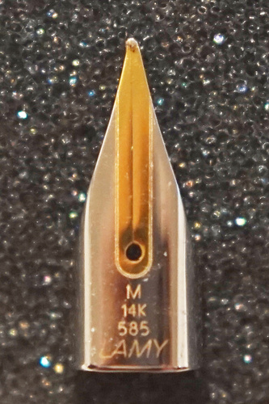
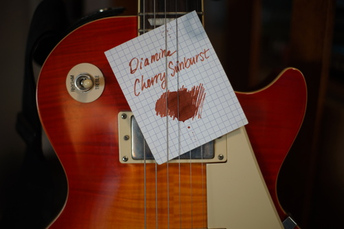
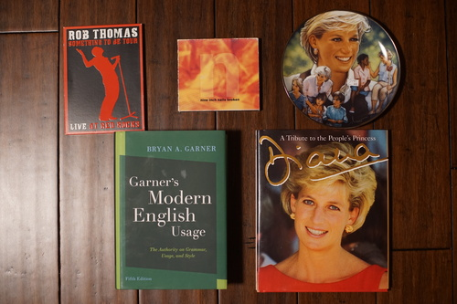
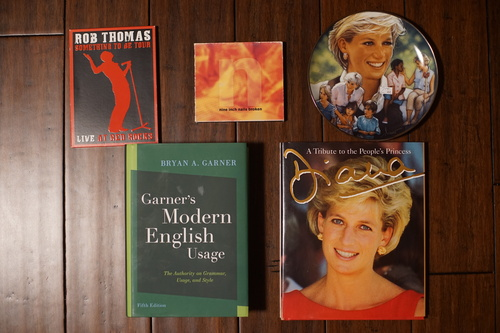
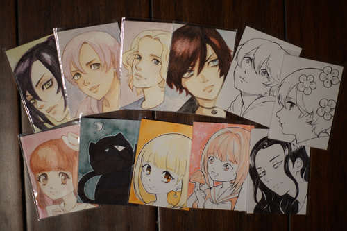

I hate to admit it to you all, but once again, I am gold nibless.
My experience with my LAMY 14k nib was not matching my experience at Oblation. It had the nice bouncy feel, but it wasn't nearly as smooth as the one I tried. My LAMY F nibs in steel aren't scratchy, but this nib was. I was beginning to think I was going crazy. Was I using the wrong paper? I don't have any Tomoe River paper like I was using for testing at the store, but I could feel it catching on all of my nicer papers.
After a few days of thinking "I really need to get my close up filters out and take a peek", I finally did it and found the probable cause: the tip is pointed towards the left.
Not only is the nib pointed towards the left, the slit through the nib is straight through, which means this nib was not dropped and this was a manufacturing defect. LAMY did not catch this at the QC level either. Allegedly, they test each of their nibs, so I don't know how they missed this one.
You'll also notice the rounded engraving is misaligned. This is just embellishment, but disappointing to see. I wasn't going to complain over this, but since I'm already complaining...
I emailed JetPens with the photo and they said they would replace it for me. I sent the nib back on Tuesday using their prepaid return label. It won't arrive at their warehouse until Monday. JetPens warned me that they only process returns once a week, but didn't say which day either. They're a smaller company, so that's understandable, but gosh I am antsy!! I'm a little worried the next nib will also come with issues. I'll give it a proper photoshoot to check much earlier.
I'm a little worried the next nib will also come with issues. I'll give it a proper photoshoot to check much earlier and trust my gut more. I noticed Reddit user coping with a misaligned engraving on a steel nib. Fortunately their nib works, but LAMY is not checking their $16 nibs or their $125 nibs. Shout out to the user who criticized LAMY and was downvoted for speaking the truth. Reddit is truly a terrible place.
As a bonus, here's Diamine Cherry Sunburst in comparison with a Epiphone Les Paul Cherry Sunburst! For some reason I didn't even consider making this comparison when I got it in. It's browner than red, but I wonder if they averaged the golden and red tones to create this color. Honestly, a cream colored pen might work for a Yui themed pen as well.
 

TRENT. I KNOW THIS CD IS OLDER THAN ME, BUT IT IS RUDE TO MAKE A 8 TRACK CD 99 TRACKS LONG.

I've got 11 artist trading cards ready to be traded! Are you guys ready yet with yours??